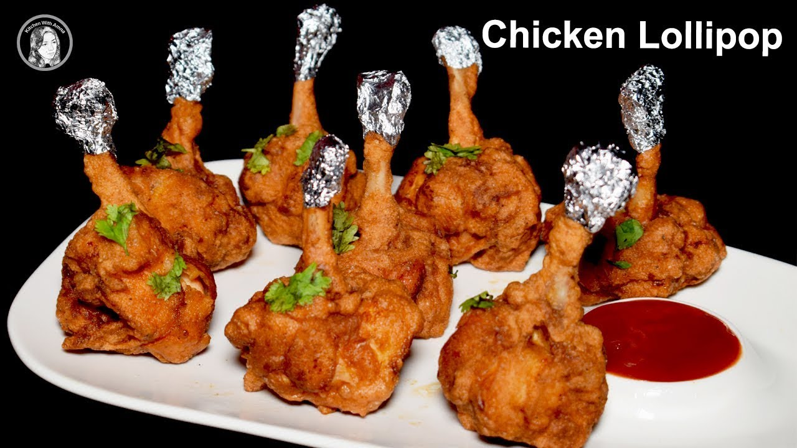
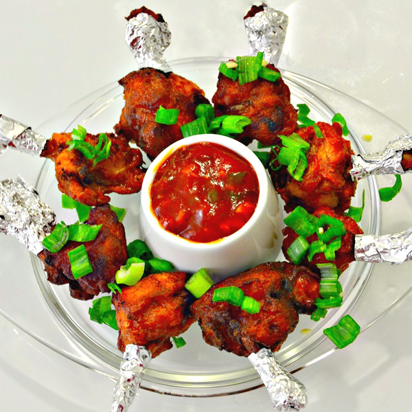

This page is Specially Designed to Show the recipe for most exclusive Dishes in World
Today We are Preparing Chicken Lollipop and the ingridents and receipe is mentioned Below. This dish is the best of a kind in Fried Chickens and it is really very delicious
Now below is the Recipe to prepare delicious Chicken Lollipop
The Chicken lollipop tastes awesome. It has rich, juicy Chicken taste with flavors of coriander and adding it with a touch of salty and sour sauce. Below is how the Chicken Lollipop looks like
 This recipe is a must try. Please try and leave your commments